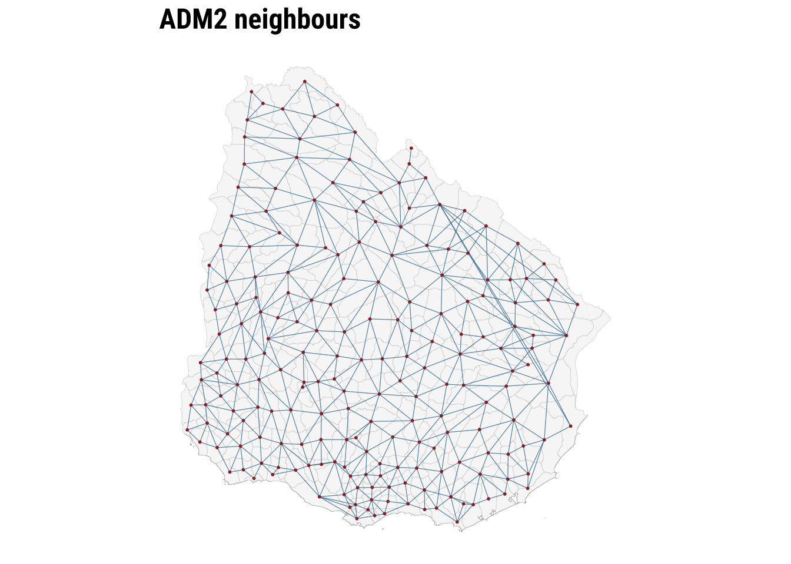
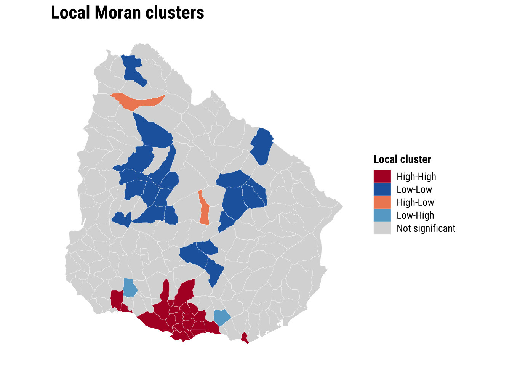
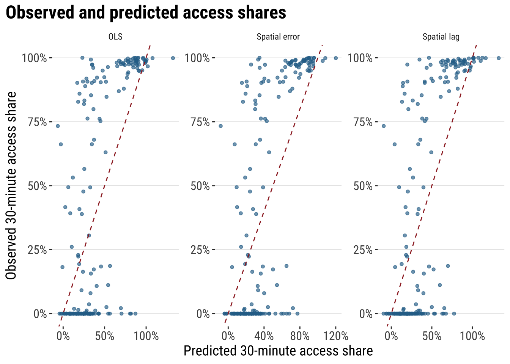
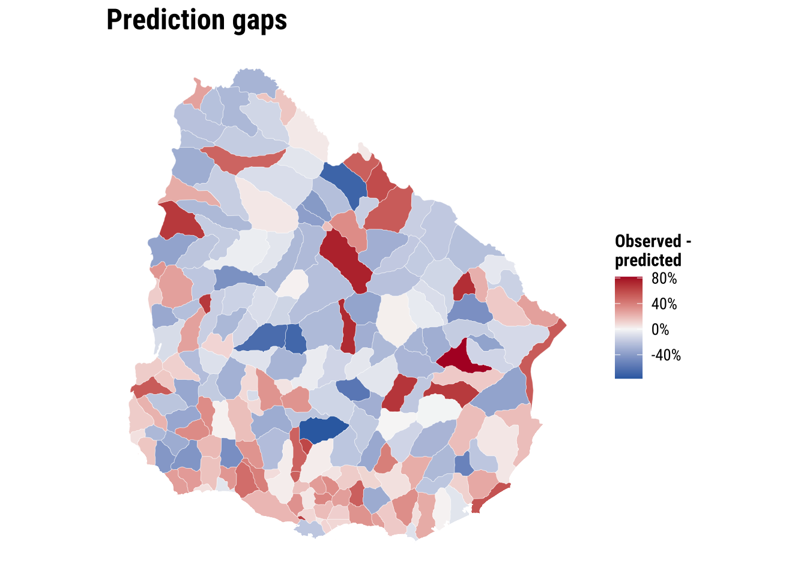

5 Spatial Dependence
This chapter introduces the concept of spatial dependence. To this end, we will seek to undertand spatial dependence in hospital accessibility. Spatial dependence may manifest as neighbouring areas may show similar levels of access because they share the same hospitals, transport corridors and wider service catchments. So accessibility in one area is partly shaped by accessibility in nearby areas. The chapter seeks to provide an understanding of appropriate methods, tools and skills to analyse data with potentially strong spatial dependence. The chapter will move from a familiar non-spatial regression to a spatial workflow that introduces weights, autocorrelation and spatial regression.
By the end of this chapter, you should be able to:
- prepare areal data for spatial modelling, define neighbourhood relationships, and construct a spatial weights matrix appropriate to the research question;
- diagnose spatial dependence in an outcome and in regression residuals using descriptive graphics, Moran’s I, and local cluster summaries;
- fit, interpret, assess, and use basic spatial regression models in
R, including comparing them with a non-spatial baseline and using fitted values for prediction in practice;
5.1 Dependencies
5.2 Data description
The chapter uses Uruguay ADM2 indicators drawn from the Uruguay Risk Assessment Indicators dataset family, downloaded from the Humanitarian Data Exchange (HDX). These files report accessibility, facilities and demographic indicators for ADM2 areas. We also use a small derived ADM2 population table created by aggregating the WorldPop 2020 Uruguay population-count raster to the same ADM2 boundaries. The main advantage of this combination is that it keeps the substantive focus on accessibility while giving us a defensible population denominator for share variables.
Each observation in the dataset refers to one ADM2 area in Uruguay. The access file contains counts of the population that can reach hospitals within different distance or time thresholds. For our purposes, the most useful variables are access_pop_hospitals_30min and access_pop_hospitals_2h. Rather than model the 30-minute count directly, we use both fields to construct a more comparable outcome: the share of the wider two-hour hospital catchment that is reachable within 30 minutes.
We combine that access file with two further indicator tables. URY_ADM2_rural_population.csv contributes rural_pop_perc, while URY_ADM2_facilities.csv contributes hospitals_count. The demographic file adds the elderly count, and the derived WorldPop table contributes total_population, which we use to construct elderly_share. The unit of analysis is therefore an ADM2 area, not an individual or a point event. The chapter then focusing on seeking answer to the question how fast hospital access varies across neighbouring areas and whether those area-level outcomes are spatially clustered.
# Read the official ADM2 boundary layer used for joins and neighbour links
adm2_boundaries <- st_read(
"data/boundaries/ury_adm_2020_shp/ury_admbnda_adm2_2020.shp",
quiet = TRUE
) |>
st_make_valid()
# Read the indicator tables needed for the chapter
access_tbl <- read_csv(
"data/risk-assessment-indicators/URY_ADM2_access.csv",
show_col_types = FALSE
)
rural_tbl <- read_csv(
"data/risk-assessment-indicators/URY_ADM2_rural_population.csv",
show_col_types = FALSE
)
facilities_tbl <- read_csv(
"data/risk-assessment-indicators/URY_ADM2_facilities.csv",
show_col_types = FALSE
)
demographics_tbl <- read_csv(
"data/risk-assessment-indicators/URY_ADM2_demographics.csv",
show_col_types = FALSE
)
population_tbl <- read_csv(
"data/derived/ury_adm2_population_worldpop_2020.csv",
show_col_types = FALSE
)# Summarise the main files and variables before joining them
data_snapshot <- tibble(
dataset = c(
"ADM2 boundaries",
"Hospital access indicators",
"Rural population indicators",
"Facility counts",
"Demographic indicators",
"WorldPop ADM2 population"
),
rows = c(
nrow(adm2_boundaries),
nrow(access_tbl),
nrow(rural_tbl),
nrow(facilities_tbl),
nrow(demographics_tbl),
nrow(population_tbl)
),
key_variable = c(
"ADM2_PCODE",
"hospital_access_30min_share",
"rural_pop_perc",
"hospitals_count",
"elderly",
"total_population"
)
)
data_snapshot# A tibble: 6 × 3
dataset rows key_variable
<chr> <int> <chr>
1 ADM2 boundaries 204 ADM2_PCODE
2 Hospital access indicators 204 hospital_access_30min_share
3 Rural population indicators 204 rural_pop_perc
4 Facility counts 204 hospitals_count
5 Demographic indicators 204 elderly
6 WorldPop ADM2 population 204 total_population 5.3 Data wrangling
We focus on the share of the wider two-hour hospital catchment that is reachable within 30 minutes. In practice, this means taking the ratio between hospital accessibility within 30 minutes and hospital accessibility within two hours. This gives us an outcome that is much more useful for comparison across areas because it does not mostly reproduce where the largest populations live. The same logic applies to elderly_share. The source data provide elderly as a count, not as a proportion, so we join a separate ADM2 population table derived from the WorldPop 2020 Uruguay population raster and use that as the denominator.
# Join the requested indicators and derive the share outcome and elderly share
risk_indicators <- access_tbl |>
# Keep the accessibility fields needed for the main share outcome
select(
ADM2_PCODE,
access_pop_hospitals_30min,
access_pop_hospitals_2h
) |>
left_join(
rural_tbl |>
select(ADM2_PCODE, rural_pop_perc),
by = "ADM2_PCODE"
) |>
left_join(
facilities_tbl |>
select(ADM2_PCODE, hospitals_count),
by = "ADM2_PCODE"
) |>
left_join(
demographics_tbl |>
select(ADM2_PCODE, elderly),
by = "ADM2_PCODE"
) |>
left_join(
population_tbl |>
select(ADM2_PCODE, total_population),
by = "ADM2_PCODE"
) |>
mutate(
# Build the share outcome from the wider two-hour hospital catchment
hospital_access_30min_share = access_pop_hospitals_30min / pmax(access_pop_hospitals_2h, 1),
# Convert the elderly count into the requested share using ADM2 population totals
elderly_share = elderly / pmax(total_population, 1)
)
# Attach the indicators to the ADM2 geometries
adm2_risk <- adm2_boundaries |>
# Keep only the identifiers and geometry needed for the chapter workflow
select(ADM1_ES, ADM1_PCODE, ADM2_ES, ADM2_PCODE, geometry) |>
left_join(risk_indicators, by = "ADM2_PCODE") |>
mutate(
# Convert the modelling variables into clean numeric fields
hospital_access_30min_share = as.numeric(hospital_access_30min_share),
rural_pop_perc = as.numeric(rural_pop_perc),
hospitals_count = as.numeric(hospitals_count),
elderly_share = as.numeric(elderly_share)
) |>
filter(
!is.na(hospital_access_30min_share),
!is.na(rural_pop_perc),
!is.na(hospitals_count),
!is.na(elderly_share)
)
# Keep a projected copy for centroid calculations when needed later
adm2_risk_utm <- st_transform(adm2_risk, 32721)
adm2_centroids_utm <- st_point_on_surface(adm2_risk_utm)
head(risk_indicators)# A tibble: 6 × 9
ADM2_PCODE access_pop_hospitals_30min access_pop_hospitals_2h rural_pop_perc
<chr> <dbl> <dbl> <dbl>
1 UY01002 0 180 100
2 UY01003 16184 16388 16.3
3 UY01004 0 24 100
4 UY01005 100 2747 100
5 UY01006 40633 41166 4.96
6 UY01007 0 164 100
# ℹ 5 more variables: hospitals_count <dbl>, elderly <dbl>,
# total_population <dbl>, hospital_access_30min_share <dbl>,
# elderly_share <dbl># Check the ranges of the outcome and the requested covariates
variable_summary <- adm2_risk |>
st_drop_geometry() |>
# Summarise each modelling variable with a few simple descriptive statistics
summarise(
across(
c(hospital_access_30min_share, rural_pop_perc, elderly_share, hospitals_count),
list(min = min, median = median, mean = mean, max = max),
na.rm = TRUE
)
) |>
# Reshape the summary so each variable reads as one row
pivot_longer(
everything(),
names_to = c("variable", ".value"),
names_sep = "_(?=[^_]+$)"
) |>
mutate(across(c(min, median, mean, max), round, 3))
variable_summary# A tibble: 4 × 5
variable min median mean max
<chr> <dbl> <dbl> <dbl> <dbl>
1 hospital_access_30min_share 0 0.16 0.412 1
2 rural_pop_perc 0 100 74.5 100
3 elderly_share 0 0.123 0.119 0.244
4 hospitals_count 0 0 0.647 40 We now have a clean area-level dataset with geometry, an outcome, and three covariates of interest. That gives us a coherent analytical base for the rest of the chapter: first describing the pattern, then estimating a familiar non-spatial model, and finally asking whether the remaining structure is spatial.
5.4 Data exploration
We begin gaining an understanding of our accessibility outcome. We create a kernel histogram. It hows the distributions of areas based on their accessibility, to address our question as to: Of the population that can reach a hospital within 2 hours, what share can do so within 30 minutes? It reveals that a large share near 0%, indicating that in many areas a small share of the population with hospital access within 2 hours can reach a hospital within 30 minutes. The pile-up near 100% indicates a smaller but still noticeable group of areas have very high short-travel access, meaning most of their 2-hour catchment is already reachable within 30 minutes.
plot_access_distribution <- adm2_risk |>
st_drop_geometry() |>
ggplot(aes(x = hospital_access_30min_share)) +
# Show the frequency pattern of the share outcome across ADM2 areas
geom_histogram(
aes(y = after_stat(density)),
bins = 30,
fill = "grey85",
colour = "white",
linewidth = 0.2
) +
# Add a kernel density line to smooth the same distribution
geom_density(fill = "#2A6F97", alpha = 0.45, colour = "#2A6F97", linewidth = 0.5) +
scale_x_continuous(labels = label_percent(accuracy = 1)) +
labs(
title = "30-minute hospital access share",
x = "Share of the two-hour hospital catchment reachable within 30 minutes",
y = "Density"
) +
theme_plot_course()
print(plot_access_distribution)
The key conclusion is that accessibility to hospital is very uneven across localidades in Uruguay. Let us map the our accessibility score to identify areas of relatively low and high access.
map_access_outcome <- ggplot(adm2_risk) +
# Fill each ADM2 polygon by the fast-access share outcome
geom_sf(aes(fill = hospital_access_30min_share), colour = "white", linewidth = 0.08) +
scale_fill_course_seq_c(
name = "30-min\nshare",
labels = label_percent(accuracy = 1)
) +
labs(
title = "30-minute hospital access share by ADM2"
) +
theme_map_course()
print(map_access_outcome)
Before modelling, a recommended approach is to examine the association between accessibility outcome and covariates to start building some intuition. A correlogram gives a compact view of the strength, direction and statistical significance of the pairwise relationships.
# Create a temporary data frame without geometry for the correlogram
correlogram_df <- adm2_risk |>
st_drop_geometry() |>
select(
hospital_access_30min_share,
rural_pop_perc,
elderly_share,
hospitals_count
)
# Obtain Pearson correlation coefficients for the accessibility outcome and covariates
cormat <- cor(
correlogram_df,
use = "complete.obs",
method = "pearson"
)
# Test which pairwise correlations are statistically significant
sig_corr <- corrplot::cor.mtest(correlogram_df, conf.level = 0.95)
# Plot the correlation matrix
corrplot::corrplot(
cormat,
type = "lower",
method = "circle",
order = "original",
tl.cex = 0.8,
p.mat = sig_corr$p,
sig.level = 0.05,
col = viridis::viridis(100, option = "plasma"),
diag = FALSE
)
The correlogram shows the strength and significance of the linear relationship between the accessibility outcome and the covariates. Larger circles indicate stronger correlations. Warm and cool colours distinguish positive from negative associations. Crosses mark relationships that are not statistically significant at the 95% level.
5.5 Baseline modelling
The baseline step is an ordinary linear regression. A baseline model is useful to understand the properties of spatial models. We need to know what a conventional non-spatial analysis would conclude if neighbour relationships were ignored.
# Fit the non-spatial baseline model required by the shared chapter template
ols_model <- lm(
hospital_access_30min_share ~ rural_pop_perc + elderly_share + hospitals_count,
data = adm2_risk |> st_drop_geometry()
)
# Tidy the coefficients for a compact teaching table
ols_coefficients <- tidy(ols_model, conf.int = TRUE) |>
mutate(
across(c(estimate, conf.low, conf.high), round, 3),
p.value = round(p.value, 4)
)
ols_coefficients# A tibble: 4 × 7
term estimate std.error statistic p.value conf.low conf.high
<chr> <dbl> <dbl> <dbl> <dbl> <dbl> <dbl>
1 (Intercept) 0.428 0.0884 4.85 0 0.254 0.603
2 rural_pop_perc -0.005 0.000632 -8.45 0 -0.007 -0.004
3 elderly_share 3.14 0.511 6.16 0 2.14 4.15
4 hospitals_count 0.009 0.00843 1.05 0.296 -0.008 0.025# Add fitted values and residuals back to the spatial layer for diagnostics
adm2_risk <- adm2_risk |>
mutate(
# Store the baseline fitted values for later comparison with spatial models
ols_fitted = fitted(ols_model),
ols_residual = resid(ols_model)
)
baseline_fit_summary <- glance(ols_model) |>
# Keep a compact set of familiar fit statistics for the teaching summary
transmute(
r_squared = round(r.squared, 3),
adj_r_squared = round(adj.r.squared, 3),
sigma = round(sigma, 3),
aic = round(AIC(ols_model), 1)
)
baseline_fit_summary# A tibble: 1 × 4
r_squared adj_r_squared sigma aic
<dbl> <dbl> <dbl> <dbl>
1 0.455 0.447 0.33 133.The baseline model gives us a first explanatory account of the outcome, but the central question is whether that account is sufficient. If nearby residuals still resemble one another, then the model is leaving spatial structure behind. At that point, a non-spatial regression is no longer a neutral simplification. It is an incomplete account of the process we are trying to explain.
plot_ols_residuals <- ggplot(adm2_risk) +
# Map residuals to see where the baseline model under- and over-predicts
geom_sf(aes(fill = ols_residual), colour = "white", linewidth = 0.08) +
scale_fill_course_div_c(
name = "OLS\nresidual",
labels = label_percent(accuracy = 1)
) +
labs(
title = "OLS residuals across localities"
) +
theme_map_course()
print(plot_ols_residuals)
These implications matter for how we read the OLS model. If the spatial dependence is mainly in the residuals, OLS coefficients can still be unbiased, but the standard errors are usually wrong. If standard errors are wrong, p-values and confidence intervals become unreliable. If the spatial dependence reflects omitted spatial processes that are correlated with the covariates, OLS coefficients can also become biased or misleading. More broadly, OLS becomes an incomplete model because part of the pattern is being generated by spatial spillovers or unmeasured spatial structure, not only by the observed covariates.
5.6 Spatial regression
The first thing then that we need is to establish if significant spatial autocorrelation exists. To this end, there are few key concepts and tools we first need to cover: spatial weights matrix, spatial autocorrelation and spatial lag. All of these are important elements of what is known as Exploratory Spatial Data Analysis. We begin with spatial weight matrix.
5.6.1 Spatial weights
A spatial weights matrix is a structured way of representing spatial relationships between observations. Each row refers to one area, each column to another, and each cell records whether those two areas are treated as connected and, if so, how strongly. In applied work, the matrix is the device that turns the intuitive idea of “nearby places may matter” into something that can be calculated and tested.
There are several ways to define those connections. One common family is contiguity-based weights, where areas are linked because they share a geographical boundary. Here we use a queen-contiguity rule. Under the queen criterion, two ADM2 areas are neighbours if they share either a boundary segment or even a single corner. This is a slightly more inclusive definition than rook contiguity, which only treats areas as neighbours when they share part of an edge. For irregular administrative polygons such as Uruguay’s ADM2 units, queen contiguity is often a sensible starting point because it captures a broader set of plausible local interactions.
The raw entries of a contiguity matrix usually begin as 1 for neighbours and 0 for non-neighbours. In practice, those raw values are often transformed before analysis. We use row-standardised weights, which means each area distributes a total weight of 1 across all of its neighbours. An area with two neighbours assigns each a weight of 0.5, while an area with four neighbours assigns each a weight of 0.25. This matters because the influence of neighbouring areas is expressed on a comparable scale even when the number of neighbours differs across the country.
# Build a queen-contiguity neighbour structure from the ADM2 polygons
nb_queen <- poly2nb(adm2_risk, queen = TRUE)
# Convert the neighbour list into row-standardised weights
lw_queen <- nb2listw(nb_queen, style = "W", zero.policy = TRUE)
# Count how many neighbours each ADM2 area has
adm2_risk <- adm2_risk |>
mutate(n_neighbours = card(nb_queen))# Summarise how many neighbours areas have under the queen rule
neighbour_summary <- adm2_risk |>
st_drop_geometry() |>
summarise(
min_neighbours = min(n_neighbours),
median_neighbours = median(n_neighbours),
mean_neighbours = round(mean(n_neighbours), 2),
max_neighbours = max(n_neighbours)
)
# Show how row standardisation distributes a total weight of 1 across neighbours
weights_example <- tibble(
adm2_pcode = adm2_risk$ADM2_PCODE[1],
neighbour_count = length(lw_queen$weights[[1]]),
weights = paste(round(lw_queen$weights[[1]], 3), collapse = ", ")
)
neighbour_summary min_neighbours median_neighbours mean_neighbours max_neighbours
1 1 6 5.49 9weights_example# A tibble: 1 × 3
adm2_pcode neighbour_count weights
<chr> <int> <chr>
1 UY01002 3 0.333, 0.333, 0.333# Draw simple centroid-to-centroid links so the neighbour definition is visible
centroid_coords <- st_coordinates(adm2_centroids_utm)
nb_lines <- nb2lines(nb_queen, coords = centroid_coords, as_sf = TRUE)
nb_lines <- st_set_crs(nb_lines, st_crs(adm2_centroids_utm)) |>
st_transform(st_crs(adm2_risk))
map_neighbours <- ggplot() +
# Plot the polygons first as the base geography
geom_sf(data = adm2_risk, fill = "grey97", colour = "grey75", linewidth = 0.08) +
# Overlay neighbour links to show how the weights connect adjacent areas
geom_sf(data = nb_lines, colour = "#2A6F97", linewidth = 0.2, alpha = 0.5) +
geom_sf(data = st_transform(adm2_centroids_utm, st_crs(adm2_risk)), colour = "#9E2A2B", size = 0.35) +
labs(
title = "ADM2 neighbours"
) +
theme_map_course()
print(map_neighbours)
The map makes the neighbour structure visible, while the summary table shows that the number of neighbours varies across areas. Some ADM2 units are only lightly connected, while others sit within denser local networks. Row standardisation matters precisely because of that variation. It ensures that the total neighbouring influence remains comparable even when areas differ markedly in how many neighbours they have. Once the weights are defined, we can test for spatial autocorrelation.
5.6.2 Spatial autocorrelation
To conduct exploratory spatial data analysis, a central question is whether the observed geography looks close to spatial randomness or whether similar values tend to group together in space. Spatial autocorrelation can be thought of as the absence of spatial randomness. When similar values cluster together nearby, we observe positive spatial autocorrelation. When similar values are pushed apart, we observe negative spatial autocorrelation.
A useful way to build intuition is through the idea of a spatial lag. The spatial lag of a variable is the weighted average of neighbouring values, using the spatial weights matrix we have just defined. If areas with high accessibility tend to be surrounded by neighbours with high accessibility, and low values tend to be surrounded by low values, the relationship between the variable and its spatial lag will slope upward. That is the visual intuition behind the Moran plot.
ESDAs are usually divided into two main groups: (1) global spatial autocorrelation: which focuses on the overall trend or the degree of spatial clustering in a variable; and, (2) local spatial autocorrelation: which focuses on spatial instability: the departure of parts of a map from the general trend. it is useful to identify hot or cold spots.
Global spatial autocorrelation
To test for global spatial autocorrelation, we will use the Moran Plot and Moran’s I statistics. The Moran Plot is a way of visualising the nature and strength of spatial autocorrelation. It’s essentially a scatter plot between a variable and its spatial lag. To more easily interpret the plot, variables are standardised. In a standardised Moran Plot, average values are centered around zero and dispersion is expressed in standard deviations. The rule of thumb is that values greater or smaller than two standard deviations can be considered outliers.
A standardised Moran Plot can also be used to visualise local spatial autocorrelation. We can observe local spatial autocorrelation by partitioning the Moran Plot into four quadrants that represent different situations:
- High-High (HH): values above average surrounded by values above average.
- Low-Low (LL): values below average surrounded by values below average.
- High-Low (HL): values above average surrounded by values below average.
- Low-High (LH): values below average surrounded by values above average.
To measure global spatial autocorrelation, we can use the Moran’s I. The Moran Plot and intrinsically related. The value of Moran’s I corresponds with the slope of the linear fit on the Moran Plot.
# Compute the spatial lag of the accessibility outcome and the OLS residuals
accessibility_lag <- lag.listw(
lw_queen,
adm2_risk$hospital_access_30min_share,
zero.policy = TRUE
)
residual_lag <- lag.listw(
lw_queen,
adm2_risk$ols_residual,
zero.policy = TRUE
)
# Standardise the outcome and its spatial lag for the Moran plot
moran_plot_df <- adm2_risk |>
st_drop_geometry() |>
transmute(
access_std = as.numeric(scale(hospital_access_30min_share)),
lag_std = as.numeric(scale(accessibility_lag))
)plot_moran <- ggplot(moran_plot_df, aes(x = access_std, y = lag_std)) +
# Compare each area's value with the average value in its neighbourhood
geom_point(colour = "#2A6F97", alpha = 0.65, size = 1.3) +
geom_smooth(method = "lm", se = FALSE, colour = "#9E2A2B", linewidth = 0.7) +
geom_hline(yintercept = 0, colour = "grey75", linewidth = 0.3) +
geom_vline(xintercept = 0, colour = "grey75", linewidth = 0.3) +
labs(
title = "Moran plot",
x = "Standardised accessibility share",
y = "Standardised spatial lag"
) +
theme_plot_course()
print(plot_moran)
The Moran plot shows the relationship between the accessibility score and the average accessibility score in neighbouring areas. An upward slope indicates positive spatial autocorrelation. High values tend to sit near high values, and low values near low values. The quadrants also help with interpretation. The upper-right quadrant corresponds to high-high observations, the lower-left to low-low observations, and the off-diagonal quadrants to spatial outliers.
Moran’s I provides the formal summary of that relationship. The statistic is closely related to the slope of the Moran plot. We calculate it twice: first for the outcome itself, and then for the OLS residuals. The first test tells us whether the observed accessibility pattern is spatial. The second tells us whether the non-spatial regression has left spatial structure behind.
# Measure global spatial autocorrelation for the outcome and the OLS residuals
moran_outcome <- moran.test(
adm2_risk$hospital_access_30min_share,
lw_queen,
zero.policy = TRUE
)
moran_residuals <- moran.test(
adm2_risk$ols_residual,
lw_queen,
zero.policy = TRUE
)
moran_summary <- tibble(
series = c("Outcome", "OLS residuals"),
moran_i = c(
unname(moran_outcome$estimate[["Moran I statistic"]]),
unname(moran_residuals$estimate[["Moran I statistic"]])
),
expectation = c(
unname(moran_outcome$estimate[["Expectation"]]),
unname(moran_residuals$estimate[["Expectation"]])
),
p_value = c(moran_outcome$p.value, moran_residuals$p.value)
) |>
# Round the diagnostics into a compact table for discussion in the text
mutate(
across(c(moran_i, expectation), round, 3),
p_value = round(p_value, 4)
)
moran_summary# A tibble: 2 × 4
series moran_i expectation p_value
<chr> <dbl> <dbl> <dbl>
1 Outcome 0.329 -0.005 0
2 OLS residuals 0.156 -0.005 0.0001The table lets us distinguish between descriptive clustering and modelling failure. A significant Moran’s I for the outcome shows that accessibility is spatially patterned overall. A significant Moran’s I for the OLS residuals shows that the baseline regression has not absorbed that pattern fully. That is the point at which a spatial model becomes substantively justified.
Local spatial autocorrelation
Global autocorrelation tells us whether the map is spatially structured overall. However, it does not tell us where that structure is strongest or whether some places depart from the general pattern. Local spatial autocorrelation addresses that question by measuring spatial association for each individual area in relation to its neighbours. The most common tool here is LISA, or Local Indicators of Spatial Association. LISA helps identify local clusters such as high values surrounded by high values and low values surrounded by low values, as well as spatial outliers where an area’s value differs from the values around it.
# Add a local Moran classification to show where clustering happens
local_moran <- localmoran(
adm2_risk$hospital_access_30min_share,
lw_queen,
zero.policy = TRUE
)
adm2_risk <- adm2_risk |>
mutate(
# Store the local Moran statistic and p-value for each area
local_i = local_moran[, "Ii"],
local_p = local_moran[, "Pr(z != E(Ii))"],
# Centre the outcome and its spatial lag so cluster types are easy to classify
outcome_centered = hospital_access_30min_share - mean(hospital_access_30min_share, na.rm = TRUE),
lag_centered = accessibility_lag - mean(accessibility_lag, na.rm = TRUE),
lisa_cluster = case_when(
local_p > 0.05 ~ "Not significant",
outcome_centered > 0 & lag_centered > 0 ~ "High-High",
outcome_centered < 0 & lag_centered < 0 ~ "Low-Low",
outcome_centered > 0 & lag_centered < 0 ~ "High-Low",
TRUE ~ "Low-High"
),
lisa_cluster = factor(
lisa_cluster,
levels = c("High-High", "Low-Low", "High-Low", "Low-High", "Not significant")
)
)map_lisa <- ggplot(adm2_risk) +
# Classify local clusters so the global autocorrelation result becomes spatially visible
geom_sf(aes(fill = lisa_cluster), colour = "white", linewidth = 0.08) +
scale_fill_manual(
values = c(
"High-High" = "#B2182B",
"Low-Low" = "#2166AC",
"High-Low" = "#EF8A62",
"Low-High" = "#67A9CF",
"Not significant" = "grey85"
),
drop = FALSE,
name = "Local cluster"
) +
labs(
title = "Local Moran clusters"
) +
theme_map_course()
print(map_lisa)
The global and local results sharpen the argument for spatial modelling. If both the outcome and the OLS residuals are spatially correlated, then dependence is not simply a visual feature of the map. It is part of the data-generating process we are trying to represent.
5.6.3 Estimation of spatial effects models
We now know that a standard OLS model is unlikely to be sufficient because neighbouring areas appear to be connected through the outcome and through the unexplained component of the regression. A common next step in spatial econometrics is therefore to estimate models that incorporate spatial dependence directly. Two of the most widely used specifications are the spatial lag model and the spatial error model.
The spatial lag model assumes that the outcome in one area is shaped in part by the outcome in neighbouring areas. In substantive terms, this is a spillover model. It is appropriate when accessibility in one ADM2 may depend on accessibility in nearby ADM2 units because they share service catchments, transport corridors, or wider regional infrastructure systems. In this specification, the key spatial parameter is rho, which captures the strength of dependence in the dependent variable itself.
The spatial error model takes a different view. It assumes that spatial dependence sits mainly in the unobserved part of the process rather than directly in the outcome. This is useful when nearby areas resemble one another because of omitted spatial factors that are not fully captured by the observed covariates, such as regional settlement patterns, unmeasured transport frictions, or institutional arrangements. In this specification, the key spatial parameter is lambda, which captures dependence in the error term.
These two models answer related but distinct questions. The lag model asks whether neighbouring outcomes directly influence one another. The error model asks whether the remaining unexplained variation is spatially structured. In practice, it is often useful to estimate both and compare them, especially in an introductory chapter where the goal is to understand what each model is designed to capture.
We therefore fit both models using the same outcome, covariates, and queen-contiguity weights matrix:
# Fit two standard spatial regression extensions using the same covariates
lag_model <- suppressWarnings(
lagsarlm(
hospital_access_30min_share ~ rural_pop_perc + elderly_share + hospitals_count,
data = adm2_risk,
listw = lw_queen,
zero.policy = TRUE
)
)
error_model <- suppressWarnings(
errorsarlm(
hospital_access_30min_share ~ rural_pop_perc + elderly_share + hospitals_count,
data = adm2_risk,
listw = lw_queen,
zero.policy = TRUE
)
)The inferential question at this stage is whether the main relationships look similar once spatial dependence enters the model directly. Comparing the OLS coefficients with the spatial lag and spatial error results therefore does more than add technical detail. It reveals whether the non-spatial baseline was broadly adequate or whether some coefficients were partly absorbing omitted spatial structure.
# Compare the main coefficients across the baseline and spatial models
lag_coef <- as_tibble(summary(lag_model)$Coef, rownames = "term") |>
transmute(
model = "Spatial lag",
term,
estimate = Estimate,
std_error = `Std. Error`,
p_value = `Pr(>|z|)`
)
error_coef <- as_tibble(summary(error_model)$Coef, rownames = "term") |>
transmute(
model = "Spatial error",
term,
estimate = Estimate,
std_error = `Std. Error`,
p_value = `Pr(>|z|)`
)
coef_plot_df <- bind_rows(
# Start with the familiar OLS coefficients
tidy(ols_model) |>
transmute(model = "OLS", term, estimate, std_error = std.error, p_value = p.value),
# Add the two spatial alternatives for direct comparison
lag_coef,
error_coef
) |>
filter(term != "(Intercept)") |>
mutate(
conf_low = estimate - 1.96 * std_error,
conf_high = estimate + 1.96 * std_error,
term = recode(
term,
rural_pop_perc = "Rural population share",
elderly_share = "Elderly share",
hospitals_count = "Hospitals count"
)
) |>
mutate(
term = factor(
term,
levels = c("Hospitals count", "Elderly share", "Rural population share")
)
)
plot_coefficients <- ggplot(
coef_plot_df,
aes(x = estimate, y = term, colour = model)
) +
# Mark zero so the direction of each estimate is easy to read
geom_vline(xintercept = 0, colour = "grey75", linewidth = 0.3) +
# Show 95% confidence intervals around each coefficient
geom_errorbarh(aes(xmin = conf_low, xmax = conf_high), height = 0.15, linewidth = 0.5,
position = position_dodge(width = 0.5)) +
geom_point(size = 2.2, position = position_dodge(width = 0.5)) +
labs(
title = "Regression coefficients",
x = "Coefficient estimate",
y = NULL,
colour = "Model"
) +
theme_plot_course()
print(plot_coefficients)
The coefficient plot shows that spatial dependence is present. But they suggest that adding spatial lag or spatial error terms does not dramatically alter the estimated covariate relationships. The three models tell a broadly similar substantive story. In this case, the main gain from the spatial models is likely to come from handling residual spatial structure more appropriately and improving the reliability of inference rather than from producing a radically different substantive conclusion.
# A tibble: 2 × 3
model parameter estimate
<chr> <chr> <dbl>
1 Spatial lag rho 0.376
2 Spatial error lambda 0.391The spatial parameters indicates that spatial dependence matters. In the spatial lag model, rho captures the extent to which fast access in one ADM2 is associated with fast access in neighbouring ADM2 areas. In the spatial error model, lambda captures spatial dependence in the remaining unexplained component. In practice, these parameters tell us whether neighbouring context continues to matter once the observed covariates are already in the model.
5.6.4 Model assessment
Once the spatial models are fitted, we need to ask whether they improve on the baseline in a meaningful way. A spatial model should not be preferred simply because it is more specialised. Its value lies in whether it fits the data better and whether it leaves less spatial structure behind in the residuals.
# Generate fitted values and residuals for model comparison
adm2_risk <- adm2_risk |>
mutate(
# Store fitted values from the two spatial models
lag_fitted = as.numeric(fitted(lag_model)),
lag_residual = hospital_access_30min_share - lag_fitted,
error_fitted = as.numeric(fitted(error_model)),
error_residual = as.numeric(residuals(error_model))
)
# Compare fit and remaining residual autocorrelation across models
model_fit_compare <- tibble(
model = c("OLS", "Spatial lag", "Spatial error"),
aic = c(AIC(ols_model), AIC(lag_model), AIC(error_model)),
fit_r2 = c(
summary(ols_model)$r.squared,
cor(adm2_risk$hospital_access_30min_share, adm2_risk$lag_fitted)^2,
cor(adm2_risk$hospital_access_30min_share, adm2_risk$error_fitted)^2
),
rmse = c(
sqrt(mean(adm2_risk$ols_residual^2, na.rm = TRUE)),
sqrt(mean(adm2_risk$lag_residual^2, na.rm = TRUE)),
sqrt(mean(adm2_risk$error_residual^2, na.rm = TRUE))
),
prediction_correlation = c(
cor(adm2_risk$hospital_access_30min_share, adm2_risk$ols_fitted),
cor(adm2_risk$hospital_access_30min_share, adm2_risk$lag_fitted),
cor(adm2_risk$hospital_access_30min_share, adm2_risk$error_fitted)
),
residual_moran_i = c(
unname(moran.test(adm2_risk$ols_residual, lw_queen, zero.policy = TRUE)$estimate[["Moran I statistic"]]),
unname(moran.test(adm2_risk$lag_residual, lw_queen, zero.policy = TRUE)$estimate[["Moran I statistic"]]),
unname(moran.test(adm2_risk$error_residual, lw_queen, zero.policy = TRUE)$estimate[["Moran I statistic"]])
),
residual_moran_p = c(
moran.test(adm2_risk$ols_residual, lw_queen, zero.policy = TRUE)$p.value,
moran.test(adm2_risk$lag_residual, lw_queen, zero.policy = TRUE)$p.value,
moran.test(adm2_risk$error_residual, lw_queen, zero.policy = TRUE)$p.value
)
) |>
# Round the comparison metrics for a compact assessment table
mutate(
aic = round(aic, 1),
fit_r2 = round(fit_r2, 3),
rmse = round(rmse, 3),
prediction_correlation = round(prediction_correlation, 3),
residual_moran_i = round(residual_moran_i, 3),
residual_moran_p = round(residual_moran_p, 4)
)
model_fit_compare# A tibble: 3 × 7
model aic fit_r2 rmse prediction_correlation residual_moran_i
<chr> <dbl> <dbl> <dbl> <dbl> <dbl>
1 OLS 133. 0.455 0.327 0.675 0.156
2 Spatial lag 109. 0.535 0.302 0.732 -0.05
3 Spatial error 121. 0.51 0.311 0.714 -0.008
# ℹ 1 more variable: residual_moran_p <dbl>plot_predicted_vs_observed <- adm2_risk |>
st_drop_geometry() |>
# Gather observed and fitted values into one tidy comparison table
select(
observed = hospital_access_30min_share,
OLS = ols_fitted,
`Spatial lag` = lag_fitted,
`Spatial error` = error_fitted
) |>
# Reshape to one row per model prediction so the plot can facet cleanly
pivot_longer(
cols = c(OLS, `Spatial lag`, `Spatial error`),
names_to = "model",
values_to = "predicted"
) |>
ggplot(aes(x = predicted, y = observed)) +
# Compare fitted and observed values with the same reference line in each panel
geom_point(colour = "#2A6F97", alpha = 0.65, size = 1.2) +
geom_abline(intercept = 0, slope = 1, colour = "#9E2A2B", linetype = "dashed") +
facet_wrap(~model, scales = "free") +
scale_x_continuous(labels = label_percent(accuracy = 1)) +
scale_y_continuous(labels = label_percent(accuracy = 1)) +
labs(
title = "Observed and predicted access shares",
x = "Predicted 30-minute access share",
y = "Observed 30-minute access share"
) +
theme_plot_course()
print(plot_predicted_vs_observed)
These diagnostics make the modelling argument much more concrete. AIC tells us whether the extra spatial structure improves fit enough to justify the added complexity. fit_r2 summarises how closely each model tracks the observed outcome. RMSE keeps the comparison in the outcome’s own units, while residual Moran’s I shows whether spatial structure is still left behind after modelling. If a spatial model is materially improving the analysis, we would expect lower AIC, lower RMSE, a stronger fit measure, and weaker residual spatial autocorrelation than the plain OLS benchmark.
5.6.5 Model prediction
Next we use the model for prediction. We use the fitted model to estimate what level of fast accessibility we would expect in each area, given its observed characteristics and wider spatial context. That creates a practical benchmark against which observed outcomes can be judged. If an area’s observed value is close to its predicted value, the model says that area is behaving broadly as expected. If an area’s observed value is much lower than predicted, the area may be underperforming relative to places with similar characteristics. If an area’s observed value is much higher than predicted, the area may be outperforming relative to expectation.
Here we use the spatial error model as a working model because it is designed precisely for cases in which residual dependence remains important. We compare the model’s fitted values with the observed outcome and look for large negative gaps. These are areas whose realised fast-access share is lower than the model would predict given their observed characteristics and neighbouring context.
# Use the selected spatial model to identify areas that underperform relative to expectations
prediction_gap_table <- adm2_risk |>
st_drop_geometry() |>
transmute(
ADM1_ES,
ADM2_ES,
observed_share = hospital_access_30min_share,
predicted_share = error_fitted,
prediction_gap = observed_share - predicted_share
) |>
# Sort from the largest negative gaps upward
arrange(prediction_gap) |>
slice_head(n = 10) |>
mutate(
across(c(observed_share, predicted_share, prediction_gap), round, 3)
)
prediction_gap_table ADM1_ES ADM2_ES observed_share predicted_share prediction_gap
1 Florida n.a135 0.000 0.773 -0.773
2 Rivera n.a16 0.021 0.722 -0.701
3 Durazno n.a81 0.000 0.680 -0.680
4 Durazno n.a79 0.000 0.653 -0.653
5 Treinta y Tres n.a108 0.000 0.615 -0.615
6 Florida n.a113 0.000 0.593 -0.593
7 Rocha n.a308 0.000 0.527 -0.527
8 Colonia n.a146 0.186 0.651 -0.464
9 Cerro Largo n.a67 0.000 0.458 -0.458
10 Paysandú n.a50 0.000 0.455 -0.455map_prediction_gap <- ggplot(adm2_risk) +
# Map the gap between observed and predicted fast access
geom_sf(aes(fill = hospital_access_30min_share - error_fitted), colour = "white", linewidth = 0.08) +
scale_fill_course_div_c(
name = "Observed -\npredicted",
labels = label_percent(accuracy = 1)
) +
labs(
title = "Prediction gaps"
) +
theme_map_course()
print(map_prediction_gap)
This prediction gives policy teams a first-screening tool. Areas with large negative gaps may deserve closer investigation. Road connectivity, river crossings, facility concentration in neighbouring municipalities, or institutional barriers may be limiting short-travel access more than the simple covariate set suggests. The value of the exercise lies in identifying where further substantive inquiry is most needed rather than treating the prediction as a final judgement.
We can push this one step further by using the model for a simple policy counterfactual. Suppose hospitals_count increases by one in two different areas. Which area would gain more in predicted accessibility? Under the current spatial error model, the answer is revealing: the marginal effect of one additional hospital is the same everywhere because the coefficient on hospitals_count is global rather than area-specific. What differs across areas is their starting predicted level, not the size of the model-implied gain from one extra hospital. That is a useful result because it clarifies the limits of the current specification and points directly toward the motivation for Chapter 06, where effects are allowed to vary across space.
# Illustrate a simple policy counterfactual for two contrasting observed areas
hospital_effect <- coef(error_model)[["hospitals_count"]]
policy_example <- adm2_risk |>
st_drop_geometry() |>
select(ADM1_ES, ADM2_PCODE, rural_pop_perc, elderly_share, hospitals_count, predicted_share = error_fitted) |>
mutate(rural_rank = min_rank(rural_pop_perc)) |>
slice(c(which.min(rural_pop_perc), which.max(rural_pop_perc))) |>
mutate(
scenario = c("Least rural area", "Most rural area"),
baseline_hospitals = hospitals_count,
counterfactual_hospitals = hospitals_count + 1,
baseline_prediction = predicted_share,
counterfactual_prediction = predicted_share + hospital_effect,
predicted_gain = counterfactual_prediction - baseline_prediction
) |>
transmute(
scenario,
ADM1_ES,
ADM2_PCODE,
baseline_hospitals,
counterfactual_hospitals,
baseline_prediction = round(baseline_prediction, 3),
counterfactual_prediction = round(counterfactual_prediction, 3),
predicted_gain = round(predicted_gain, 3)
)
policy_example scenario ADM1_ES ADM2_PCODE baseline_hospitals
1 Least rural area Cerro Largo UY03067 0
2 Most rural area Artigas UY01002 0
counterfactual_hospitals baseline_prediction counterfactual_prediction
1 1 0.458 0.462
2 1 0.281 0.285
predicted_gain
1 0.004
2 0.004This illustration shows how the fitted model can be used for policy-oriented comparison, but it also highlights an important limitation. If the objective is to decide where an additional hospital would produce the largest accessibility gain, a model with one common hospital coefficient will not distinguish strongly between places. For that question, we need a framework that allows relationships to vary across space. That is precisely the motivation for the next chapter on spatial heterogeneity.
5.7 What to take away
The main general take away points are:
- spatial dependence starts from non-independence between nearby observations
- the role of the spatial weights matrix in formalising neighbourhood structure
- the purpose of Moran’s I, the Moran plot, and LISA within exploratory spatial data analysis
- the modelling logic behind OLS, spatial lag, and spatial error models
- the comparative strategy of using spatial models to improve fit, inference, and residual structure diagnostics